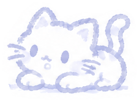
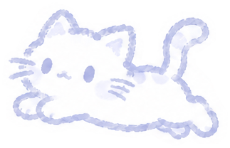
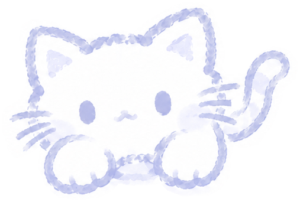
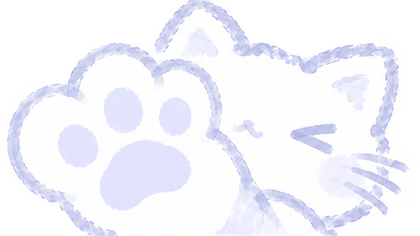

欢迎进入雪落机LET THE DAYDREAM BEGIN
09:41●●● ▰
A LITTLE SPACE FOR YOU
09:41
雪落机 · LITTLE PHONE ● ○ ○
阿遥演示模式 · 尚未配置接口
连接 AI
使用 OpenAI 兼容的 Chat Completions 接口。地址填到 /v1 即可，也支持完整 /chat/completions 地址。消息会发送给填写的服务商，可能产生费用。服务商必须允许浏览器跨域请求；本页没有代理服务器。
雪落机
聊天与相遇共用上面的接口配置，分别保存对话。未连接时为预设试玩。记录和美化保存在当前浏览器；关闭网页后不会后台运行。
版本：雪落机 1.0 · 2026.11.23
清除后会重新显示初始演示内容；此操作不可撤销。
美化让这片小天地更像你
YOUR OWN LITTLE SPACE
桌面外观
相遇预设试玩 · 可在设置中连接 AI
ENCOUNTER / CHAPTER 01
这里添加的是本机虚构角色，不会搜索或联系真实用户。
我的通讯名片 · 展示示意
装饰图案，不是可扫描的真实二维码